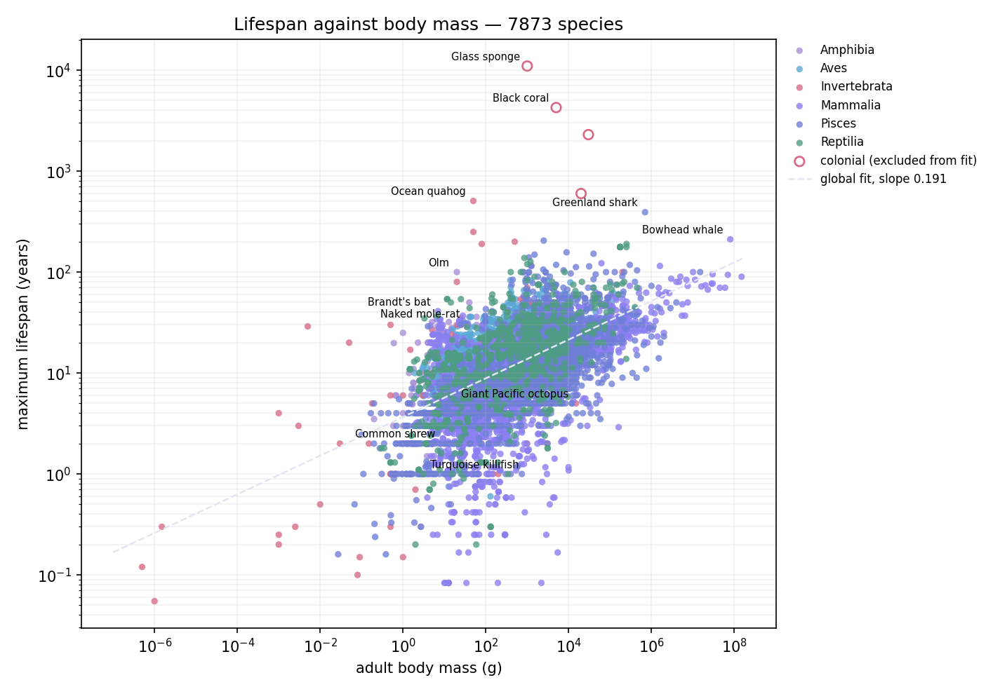
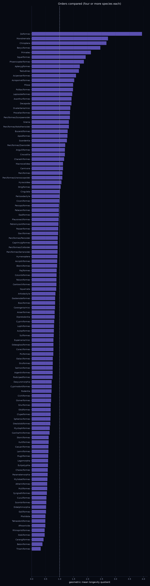
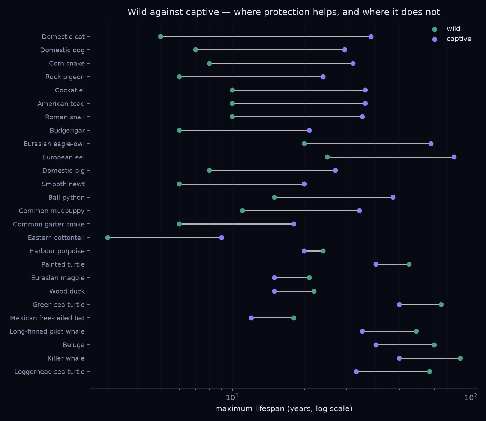

Longevity quotient
How long an animal lives, against how long an animal of its size should live.
Body mass predicts lifespan. Across the 417 species in this model — from a nematode at a microgram to a blue whale at 150 tonnes, twenty orders of magnitude of body size — each tenfold increase in mass buys roughly a 1.5-fold increase in maximum lifespan. The relationship is strong enough to be worth dividing out. What remains when you do is the longevity quotient:
LQ = observed lifespan ÷
lifespan predicted from body mass
It is built by analogy with the encephalisation quotient1, which does the same thing to brain size. A quotient of one means an animal lives exactly as long as its size predicts. The interesting animals are the ones far from one.
The visualiser
Every species is a row with two bars: wild maximum and captive maximum, with a tick at the average of the two. Change the sort and the rows animate to their new positions, so the ranking rearranges in front of you rather than being replaced by a new table. Sort by quotient, lifespan, body mass or name; switch which lifespan is used; switch the baseline between a species' own group and a single fit across all animals; filter to any taxon at any rank.
The second view aggregates whole taxa and compares them against each other at any rank from phylum down to genus, by mean quotient, median lifespan, longest member or species count. Click a group to drop into the species inside it.
Open the visualiser Download code and data
Lifespan against body mass. The dashed line is the fit across every animal in the table. Distance above or below that line, measured within a species' own class, is the quotient.
Fitting the baseline
An ordinary least squares regression of log lifespan on log body mass, run globally and within each group. Fitting inside a group matters a great deal. Birds come out about 1.8 times longer-lived than mammals of equal mass, which matches what the comparative literature reports, so a single fit across every animal charges every bird a bonus it did not earn and every mammal a penalty it does not deserve. Fish classes are pooled together, and the many small invertebrate classes are pooled into one baseline, because separately they are too thin to fit.
| Baseline | Species | Slope b | r² | Predicted at 1 kg |
|---|---|---|---|---|
| All animals | 413 | 0.182 | 0.46 | 21.8 yr |
| Mammals | 147 | 0.146 | 0.49 | 17.2 yr |
| Birds | 89 | 0.167 | 0.41 | 31.0 yr |
| Reptiles | 45 | 0.158 | 0.26 | 32.5 yr |
| Fish | 46 | 0.173 | 0.38 | 25.3 yr |
| Invertebrates | 62 | 0.253 | 0.43 | 23.8 yr |
A fit is only used if it is worth using. The amphibian regression returns an r² of 0.12 across twenty-four species, which is not a relationship. Any group fit with a non-positive slope or an r² below 0.15 is rejected, and that group falls back to the global baseline. The model reports which groups were rejected and why. Amphibians are currently the only one.
Comparing whole groups
The group view aggregates every species in a taxon and sets taxa against each other. The bar is the geometric mean quotient of the group's members, with a faint line spanning its lowest to its highest. The geometric mean is the correct average for ratios: a species at four times prediction and one at a quarter of it should average to one, not to 2.1.
At order rank the bats of Chiroptera2 lead at two and a half times prediction, followed by the perch-like fishes, the parrots, the primates at 1.8, and the albatrosses and petrels. At the bottom sit the shrews, moles and hedgehogs of Eulipotyphla at 0.37, and the ground birds of Galliformes at 0.43. At family rank the bats of Vespertilionidae reach 3.1 and the rockfishes of Sebastidae3 3.5. Flight, burrowing, venom, armour and simply being difficult to swallow all register as raised quotients. Being a ground bird or a small terrestrial insectivore registers as the reverse.

Every order holding four or more species, ranked by geometric mean quotient. The dashed line is parity with prediction.
Colonies are not individuals
Four entries are colonies rather than animals: a black coral aged at 4,265 years, a boulder star coral, a giant barrel sponge, and a glass sponge whose spicule growth rings have been read as eleven thousand years. Those are ages of the colony, and the polyps composing them live ordinary short lives. They are excluded from every regression, and hidden from the rankings by default, because an eleven-thousand-year colony sits at the top of every sort and buries whatever the data actually shows.
What comes out
The highest quotients against their own group belong to an ocean quahog4 clam at forty-five times its predicted lifespan, a garden ant queen at twenty-seven, a cold-seep tubeworm at twenty-two, the freshwater pearl mussel at fifteen, and a leafcutter ant queen and the red sea urchin at ten. The lowest belong to the silkmoth, a wasp worker, Labord's chameleon, and the squid and octopus at around one-twentieth of prediction.
Three of those are the reason the exercise is worth doing at all. The honey bee worker and the honey bee queen carry the same genome and sit an order of magnitude apart in lifespan, because caste and diet decide the outcome rather than genetics. The giant Pacific octopus is large, capable, and dead in five years, because it breeds once and then stops eating — while the chambered nautilus, a cephalopod that does not breed once and die, lives twenty. And Labord's chameleon spends most of its existence inside an egg and then lives four or five months as an adult, the shortest life of any four-limbed vertebrate, in a body whose size predicts eight years. None of this is visible in a table of lifespans sorted by years. All of it is unmissable the moment body mass is divided out.

Wild against captive, sorted by the size of the gap. Where protection helps most, and where it does not help at all.
What the numbers do not mean
These are maxima, not averages, and a maximum is sensitive to how many individuals were watched and for how long. Captive maxima are better documented than wild maxima for nearly every species here, because captive animals get counted and wild ones do not, and that asymmetry inflates the apparent captive advantage. The advantage is real for small prey animals, which mostly die of being eaten. It reverses for large social mammals: elephants and killer whales have lower median lifespans in captivity than in the wild, whatever their record holders show.
An r² of 0.46 measured on logarithms still permits a factor-of-two error on any individual species. The quotient is a lens for finding outliers, not a measurement of one. And body mass is one variable among several that carry real signal — metabolic rate, age at first reproduction, whether the animal flies, whether it lives underground, and whether it breeds once or repeatedly. Flight and burrowing between them account for most of the top of the mammal list. Adding a predation-risk proxy as a second regressor is the obvious next build.
Data
417 species spanning 10 phyla, 30 classes, 127 orders, 263 families and 387 genera, each with full taxonomy, adult body mass, wild maximum, captive maximum, a quality grade and a note, compiled from the comparative longevity literature5. Grades run from documented and verified, through defensible literature estimate, to uncertain, and each species carries its grade in the visualiser. Disputed records are excluded in favour of verified ones: the 226-year koi and the 120-year cockatoo are both out. The download includes a loader that rebuilds the table from AnAge, the reference comparative longevity database of some 4,200 species, along with the reason to merge it rather than replace with it — AnAge carries one longevity figure per species and it is nearly always the captive one, so a wholesale rebuild gains breadth and loses the wild-against-captive comparison this project is built around.
Python, no dependencies for the model. The visualiser is one self-contained HTML file. Download the code and data.
Sources
Numbered markers in the text above point here. Emission factors, cost ranges and lifespan figures are representative values from these sources, not measurements made for this project.
- Jerison, Evolution of the Brain and Intelligence, Academic Press, 1973.The quotient construction this model borrows.
- Wilkinson & Adams, Biology Letters, 2019 - recent advances in the biology of bat ageing.Why flight and longevity travel together.
- Nielsen et al., Science 353:702, 2016 (Greenland shark, eye-lens radiocarbon); Cailliet et al., Experimental Gerontology 36:739, 2001 (rockfish otolith ageing).The extreme fish lifespans, and the dating methods behind them.
- Butler et al., Palaeogeography, Palaeoclimatology, Palaeoecology, 2013 - the 507-year Arctica islandica.The longest-lived non-colonial animal recorded.
- Tacutu et al., Nucleic Acids Research 46:D1083, 2018 - the AnAge database of animal ageing and longevity.Maximum lifespan and adult body mass for most species in the table.